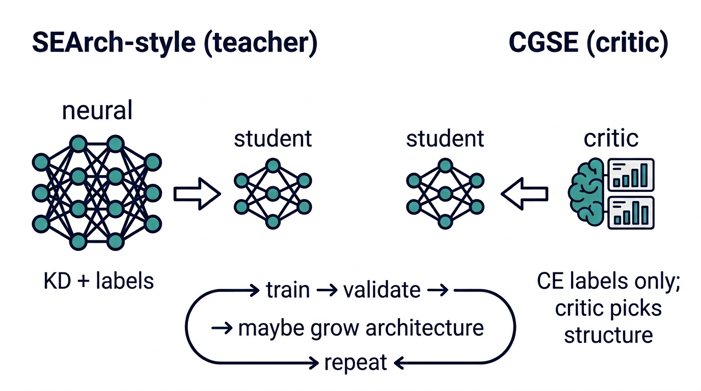
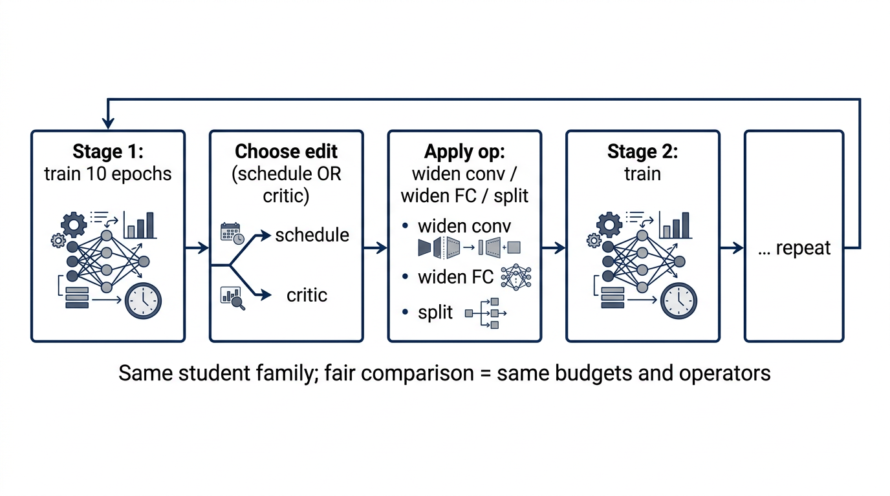

Concept figures


Tier 1 — five-arm grid (CIFAR-10)
| Arm | Best val acc (mean ± std) | Final val acc (mean ± std) | Seeds |
|---|
Tier 1b — schedule vs critic
| Arm | Complete seeds | Mean best val acc | Mean final val acc | Incomplete seeds |
|---|
Regenerate
python scripts/build_results_site.py
cd web && python -m http.server 8765